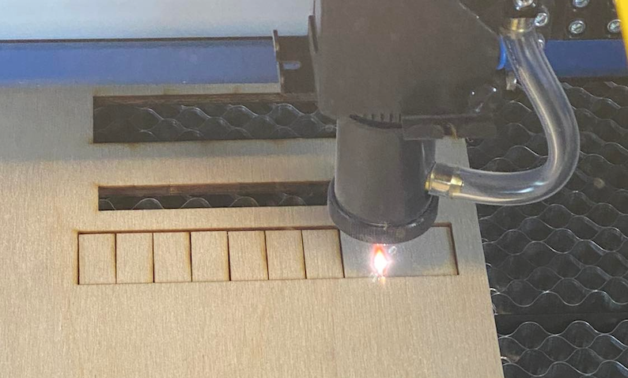
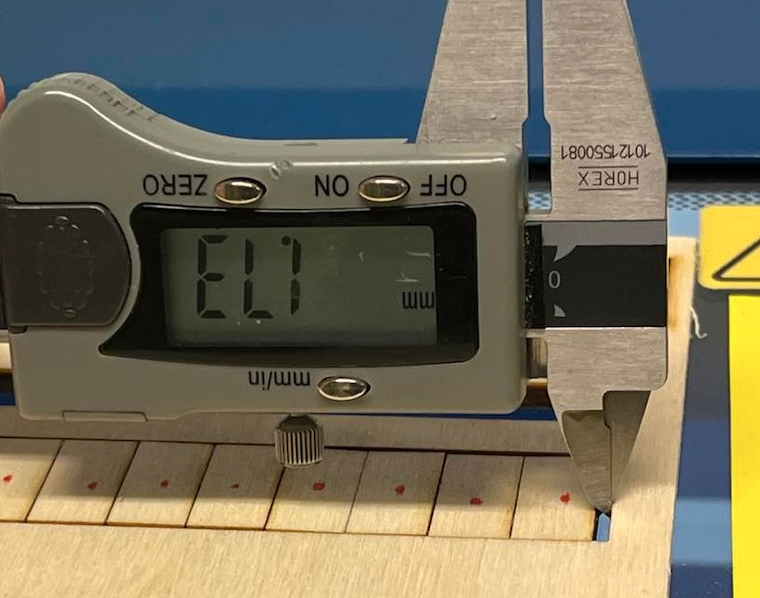

Verkefni 2:
Tölvustuddur skurður
Kerf fundið
Byrjað var á því að velja sér laser-skera og mæla kerfið í honum. Það er gert með því að velja efni sem maður ætlar að nota og teikna upp nokkra kassa og skera út. Síðan eru kassarnir færðir til hliðar og plássið sem verður eftir er mælt og síðan deilt með fjölda lína sem er skorið í efnið. Hér fyrir neðan má sjá myndir af ferlinu. 
Eins og má sjá fengum við að gatið var 1,73 mm. Við skárum 11 línur svo við reiknum: 1,73/11 = 0,1572 mm Þá höfum við að kerfið er 0,1572mm.
Fóðurskammtari hannaður og framleiddur
Ég var búin að vera lengi að hugsa hvað ég ætti að gera í þessu verkefni en loks ákvað ég að hanna fóðurskammtara fyrir fugla. Hugmyndina fékk ég þegar ég var í búðinni Gæludýr.is og ég sá mjög sætan fóðurskammtara í laginu eins og lítið hús. Hér má sjá fóðurskammtarann á síðunni þeirra. Byrjað var á því að skissa hönnunina upp á blað. Ég ákvað að ég vildi hafa húsið slétt að aftan til að hægt væri að festa það á vegg og að auðvelt væri að taka aðra þakplötuna af til þess að fylla húsið af fóðri. Þegar að hönnunin var klár var byrjað að teikna í Fusion og á myndinni hér fyrir neðan má sjá loka útkomuna.Allar stærðir voru festar með Parameter svo að auðvelt væri að breyta hönnuninni og efnisþykkt. Hér á myndinni fyrir neðan má sjá hvernig Parametrarnir litu út.

Næst er teikningin undirbúin fyrir laser skerann. Það er gert með því að leggja alla parta niður á sama flöt í Fusion. Það er gert með því að velja Modify og svo Align og velja þá partinn sem þú vilt færa og planið sem þú vilt færa hann á. Hér fyrir neðan má sjá mynd af öllum pörtunum af fóðurskammtaranum á sama plani. Ég valdi að færa allt á sama plan og botninn var á.
Ath. að fyrst þegar að allt er fært á sama plan eru allir partarnir ofan í hvor öðrum en þá þarf að ýta á hvern body og Move og þá er hægt að draga hlutina til hliðar og færa þá til.
Næst er kerfið stillt í Fusion. Þá er farið úr Design og yfir í Manufacture umhverfið og þar er búið til nýtt Setup. Mikilvægt er að huga að því hvernig z-ásinn snýr en hann á að snúa upp. Þá lítur þetta svona út:
Næst er valið Fabrication og undir því er Cutting og New 2D profile og þar er búið til nýtt verkfæri. Ýtum á plús merkið í hægra horninu og þá birtast margir möguleikar af verkfærum. Við veljum Laser cutter og inn í þeim glugga er valið cutter. Þá er hægt að setja kerfið sem fundið var í kerf prófuninni inn í Kerf with gluggann. Hér fyrir neðan má sjá skjáskot af glugganum þar sem maður stillir kerfið.
Þá ætti verkfærið sem við vorum að gera að vera komið inn í verkfæragluggann. Við veljum það verkfæri og inn í 2D profile glugganum veljum við Geometry og veljum alla hlutina og ýtum á OK og þá lítur þetta svona út:
Næst er valið Post process og viðeigandi stillingar valdar. Þá er hægt að opna skjalið í Inkscape. Þegar þetta er opnað í Inkscape er teikningin að öllum líkindum ekki inn á svæðinu eins og sést hér á mynd.
Hægt er að breyta vinnusvæðinu með því að fara inn í File og svo Document properties. Þegar að vinnusvæðið er komið í rétta stærð er hægt að velja Group og þannig velja hvern part fyrir sig og færa þannig að allt passi á vinnusvæðið. Þá setti ég skjalið á USB lykil og stakk honum síðan í tölvuna upp í skóla sem er tengd við skerann og kláraði að stilla nokkrar stillingar í Inkscape sem kennari hjálpaði mér með. Hér má síðan sjá loka útkomuna á fóðurskammtaranum en hann heppnaðist mjög vel.
Ath. Ég ákvað að líma þunnt plast fyrir gluggann á húsinu svo að fóður myndi ekki detta þar út. Einnig hefði fóður-gatið mátt vera stærra eða þá að nota fuglafóður sem er smærra þar sem að fræin eiga það til að festast í gatinu.